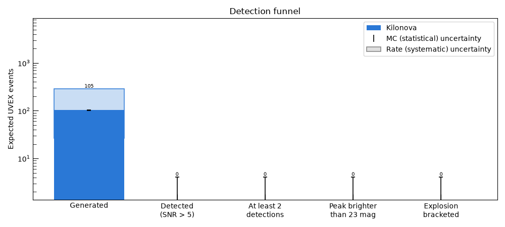
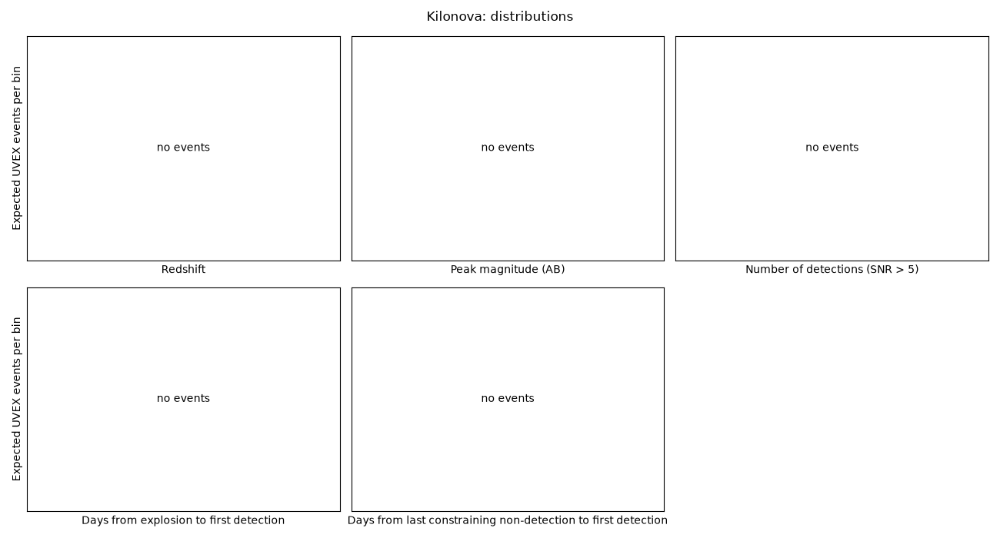
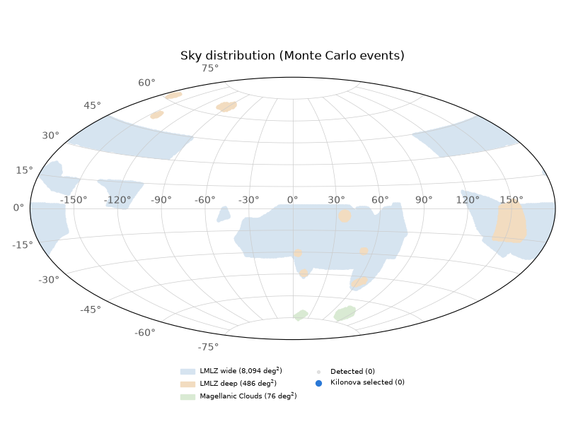

Note
Go to the end to download the full example code.
Kilonovae#
Kilonovae, the UV and optical counterparts of binary neutron star mergers (see Kilonovae for the model and its rate). They are rare and nearby, so the whole population is sampled with no downsampling.
This page is built from the event summary table of the latest release (its event_summary.ecsv),
which from_release() downloads with
get_results(). Every figure and table comes from the
SummaryReport of that table. If a data product cannot be
obtained, for instance without network access or from a release cut before the table existed, the cells
that need it are skipped.
from uvex_transients.transients.kilonovae import Kilonova
from uvex_transients.utils.plotting import set_plot_style
from uvex_transients.utils.summary_report import PopulationSpec, SummaryReport
set_plot_style()
# The longest allowed gap, in days, between the last constraining non-detection and the first detection.
POPULATIONS = {
"kilonova": PopulationSpec("Kilonova", max_gap=3.0),
}
try:
report = SummaryReport.from_release(POPULATIONS)
except (ConnectionError, LookupError, OSError, ValueError) as err:
report = None
print(f"Skipping this page's analysis, the release data is not available: {err}")
else:
print(f"{len(report.summary):,} events in the release's summary table.")
22,174 events in the release's summary table.
The selection#
The summary table has one row per Monte Carlo event that cleared the magnitude and SNR screens. The science selection applied to those rows is three cumulative cuts:
Repeat detections: at least two epochs with SNR above threshold, since a lone detection is hard to tell apart from noise or an artifact.
Bright peak: the highest-SNR measurement is brighter than 23 AB mag.
Bracketed explosion: the gap between the last constraining non-detection (one whose rise to the first detection is significant at 3 sigma, so a marginal non-detection does not count) and the first detection is below a per-population limit, so that the explosion time is pinned down. An event with no constraining non-detection has no bracket and is dropped.
The allowed gap is set at roughly the time each event takes to rise:
Population |
Max gap (days) |
Reasoning |
|---|---|---|
Kilonova |
3 |
The UV emission fades within days, so the explosion has to be pinned down to a few days for the event to still be bright when it is found. |
if report is not None:
for key, counts in report.stage_counts().items():
print(f"{report.populations[key].label}:")
for name, count in zip(report.STAGE_NAMES, counts):
print(f" {name:<22s}{count:>10,}")
Kilonova:
Generated 75
Detected 0
Repeat detections 0
Bright peak 0
Explosion bracketed 0
Detection funnel#
How many events of each population survive each stage, in expected UVEX events: the number of Monte Carlo events that reach a stage times \(\mu_0 / n\), with \(n\) the number generated and \(\mu_0\) the intrinsic number of events in UVEX’s footprint and observing window. The first bar is therefore \(\mu_0\), and any downsampling and windowed sampling is already accounted for.
Black error bars are the Monte Carlo uncertainty on each stage (a Clopper-Pearson interval, treating the stage as a binomial subsample of the generated events). The pale band is the rate uncertainty, which scales every stage by the same factor instead of shrinking as the sample is cut down.
if report is not None:
report.plot_funnel()

Expected number of events#
The Monte Carlo counts alone are not a forecast. With \(n\) events generated, \(k\) selected
and \(\mu_0\) intrinsic UVEX events, the fraction selected is \(k / n\) and the expected yield
is \(\mu_0 k / n\)
(estimate_yield()). Populations are reported separately and
never summed, since that would mix independent Monte Carlo errors with a shared rate uncertainty.
With nothing selected, only an upper limit is meaningful.
if report is not None:
report.yield_table().pprint_all()
Population Intrinsic UVEX events Selected / generated Fraction (90% CI) Expected selected events
---------- --------------------- -------------------- ---------------------- ------------------------
Kilonova 105 0 / 75 0.00% (0.00% to 3.92%) < 4.09 (90% upper limit)
Distributions of the selected events#
Histograms of the properties behind each cut, plus the redshift. Each event is weighted by its
weight column, so a bin’s height is an expected number of UVEX events and the legend entries are
totals: the gray histogram is the expected number of events detected at all, and the colored one the
expected yield. Dashed lines mark the cuts. Each panel shows a single cut, so some events on the
surviving side of a line are still removed by one of the others.
Peak magnitude: events to the left of the line survive. It is fainter than the true peak of the light curve whenever the cadence misses the maximum.
Number of detections: events to the right of the line survive.
Days from explosion to first detection: how long after the explosion UVEX first catches the event, in the observer frame.
Days from last constraining non-detection to first detection: how tightly the survey brackets the explosion. Events to the left of the line survive, and those with no constraining non-detection are left out of this panel.
if report is not None:
report.plot_distributions()

Sky distribution#
Where the detected events, and the selected ones among them, fall on the sky.
if report is not None:
report.plot_sky()

Example light curves#
One selected event of each population, rebuilt from the release’s event catalog and observed with synthetic photometry against the schedule. Filled squares are detections, open triangles are upper limits, and the lines are the noiseless model. This needs the event catalog and the survey schedule as well, and the schedule is fetched fresh, so it can differ from the one the release was run against.
events = schedule = None
if report is not None:
try:
from uvex_transients.simulation import EventCatalog
from uvex_transients.surveys import get_schedule
from uvex_transients.utils import get_results
events = EventCatalog.from_disk(get_results(["events"])["events"])
schedule = get_schedule()
except (ConnectionError, LookupError, OSError, ValueError) as err:
print(f"Skipping the example light curves, a data product is not available: {err}")
if events is not None:
from uvex_transients.missions import uvex_fast as uvex
transients = {"kilonova": Kilonova()}
for key in report.populations:
try:
report.plot_example_event(key, events, transients, schedule, uvex)
except ValueError as err:
print(err)
No Kilonova events survived the selection.
Total running time of the script: (0 minutes 4.156 seconds)